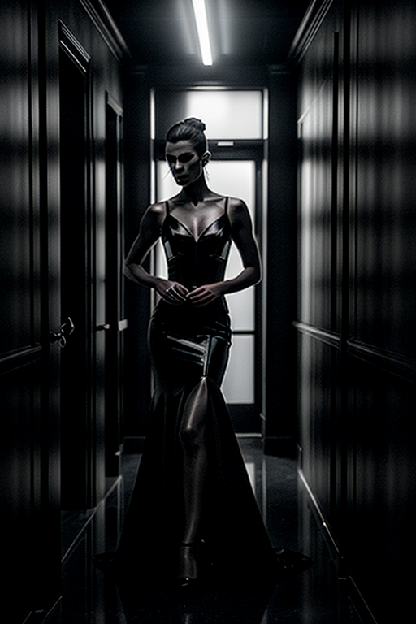
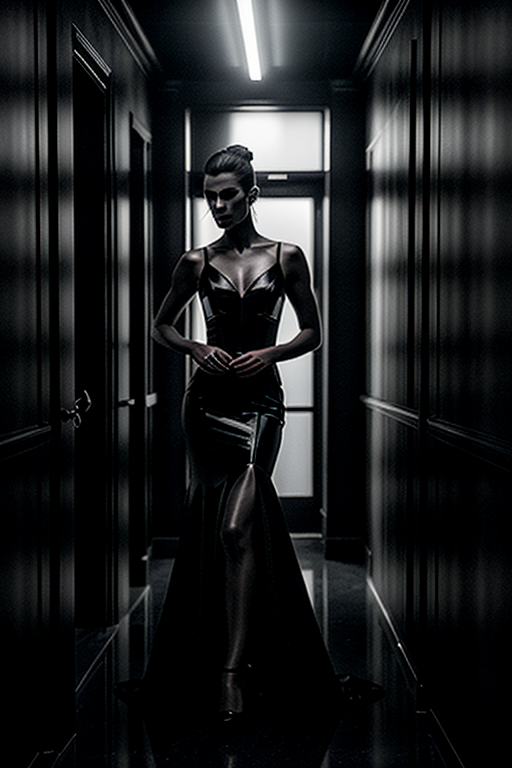

This set explores dark aesthetic style men through vintage aesthetics and playful tone under golden-hour glow. Compositions use close-up with urban backdrop, keeping focus clear and tidy. Details like evening dress styling and balanced colors make browsing easy.
Browse dark images. Page 12 of curated dark-style portrait collection.


 

This page explores page12 with a practical focus on visual detail and browsing experience. Internal navigation leads to related items with comparable tone or composition. This reduces bounce and supports exploration within the same theme. Alt text and headings are optimized to make the content accessible and to provide consistent cues across the site. Subtle differences in wording help avoid duplication across similar pages. The image aims to deliver a straightforward visual impression while keeping the file lightweight. A brief explanation clarifies the subject and lighting so visitors can quickly decide where to go next. Internal navigation leads to related items with comparable tone or composition. This reduces bounce and supports exploration within the same theme. If you are comparing alternatives, keep an eye on subtle differences in framing, contrast, and color balance. Internal navigation leads to related items with comparable tone or composition. This reduces bounce and supports exploration within the same theme. For more context, browse related entries linked nearby; each page offers a slightly different angle to limit overlap.